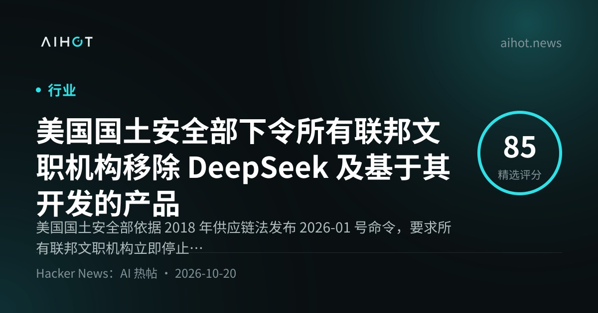
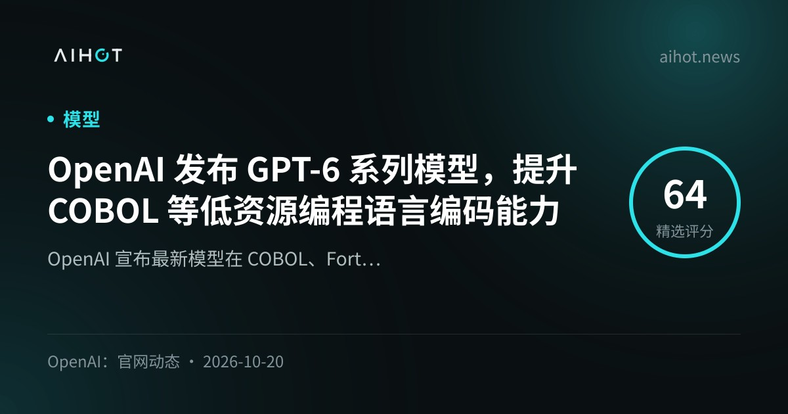
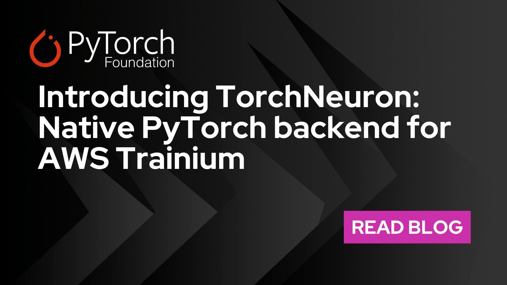
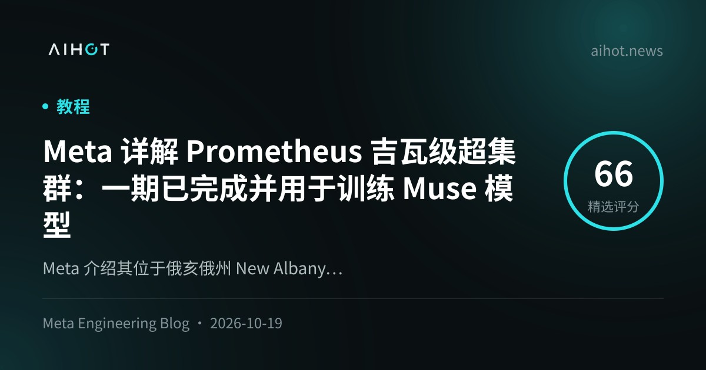
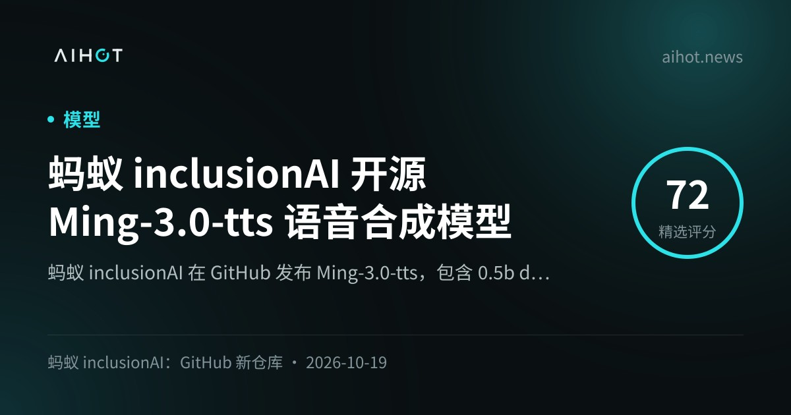

01模型 头条
MiniMax 发布 M3.1 Flash：揭晓 Space Bunny，AA 指数 42，权重 10 月 23 日开放
10-19 19:56 北京时间AIHOT 热榜 #1 · 本期头条独立来源 5 家

MiniMax 官方博客社交图（来源：minimax.io）
介绍
北京时间 10-19 19:56，@MiniMax_AI 正式发布 MiniMax M3.1 Flash，并确认此前在 OpenRouter / OpenCode 匿名登顶的 Space Bunny 是其早期版本（官方称匿名期处理 200T+ tokens）。官方口径：相对 M3，智能体任务用量成本约降 70%、在线推理近 3×，日常输出可达 200+ TPS。API 统一定价 $0.15 / $0.60 每百万输入/输出 token，缓存读 $0.015；产品侧已上 MiniMax API、M Plan 与 MiniMax Code，权重定于 10 月 23 日开放（许可证未在发布帖写明）。
为什么重要
Flash 线继续卷「agent 单位任务成本」：@OpenRouter 称 Space Bunny 曾连续 10 天居其用量榜首、处理 56.7T tokens，回归后免费 72 小时；@ArtificialAnlys 给出 Intelligence Index 42（较 M3 高 13 分，与 GLM-5.3-Flash 持平，落后 DeepSeek V4.1 Flash 1017 的 45），每任务约 $0.22——但 AA-Omniscience 上幻觉率高达 93%，企业落地必须把「敢答」和「答对」分开看。
要点
- 官方基准（博客）：DeepSWE v1.1 73.7%；OSWorld V2 61.7（称中国模型第一档）；CyberGym 82%；BankerToolBench 76.2；Automation-Bench / ALE 等用于 cowork 叙事
- AA 独立评测：Index 42；HLE 48%；AutomationBench-AA 73%；成本约 $0.22/Index 任务；上下文 1M；文/图入、文本出；max effort 设定下测得
- 分发：官方 API + M Plan + MiniMax Code；OpenRouter / OpenCode 限时免费；Ollama / GMI Cloud 等 Day-0（部分跟进落在窗口末或次日凌晨，以各平台帖为准）
- 未写死：权重许可证与 Pro 档发布时间官方仅称「later」；Testing Catalog 等第三方转述的可调思考深度等细节，以官方博文为准
02治理未证实项
Anthropic 设 Public Benefit Fund：起步承诺公司 5% 股份，随估值台阶可再加
10-19 02:07 北京时间周末留给本期 · AIHOT 热榜 #3独立来源 4 家

Anthropic 新闻稿社交图（来源：anthropic.com）
介绍
北京时间 10-19 02:07，@AnthropicAI 发帖并挂出新闻稿：设立全资 Anthropic Public Benefit Fund，在股东批准前提下起步承诺公司 5% 股份；公司估值每较设定基准上涨 50%，董事会可酌情再追加最多 2%。官方称与联合创始人已承诺捐赠 80% 股权、约半数员工参与股权捐赠匹配计划合计，约合 20% 股份面向公益用途。基金采用全资 LLC 而非 501(c)(3)，以保留捐赠形态灵活性；持有股权不会用于美内外游说或政治捐款。
为什么重要
这是 PBC 叙事下的「把升值发给公益」结构，而不是一次性现金基金会。新闻稿点名劳动力市场冲击：公司已投入 2 亿美元研究就业影响，基金可做大额捐赠或直发特定人群。周末合刊已把它标成「留给周一」；本窗口内官方 X、TechCrunch 与 Rohan 跟进齐了。
要点
- 结构：全资 LLC；治理与估值台阶细节「未来数月」再披露；需股东批准
- 递增规则：每 50% 估值抬升，董事会可酌情 +2%；官方强调相对高管递增加薪，更倾向把股权导向公益
- 估值转述：Rohan Paul 按约 $965B 估值估算起步 5% 约 $48B——属第三方推算，非公司官方标价
- 既有承诺：联合创始人 80% 股权捐赠意向 + 员工匹配计划；已投 $200M 就业影响研究
⚠ $965B / $48B 为第三方按估值推算，非 Anthropic 官方披露
03监管
美国土安全部公示命令：联邦文职机构须排除并移除 DeepSeek 及基于其实现的第三方产品
10-19 北京时间AIHOT 热榜 #4 · 监管重磅独立来源 4 家

AIHOT 事件卡配图（来源：aihot.news）
介绍
10-19，美国国土安全部（DHS）向联邦公报提交公示：依据 2018 年《联邦采购供应链安全法》，发布 Exclusion and Removal Order #2026-01（原签发日文件写 2026-07-24），要求联邦文职行政部门机构：（1）停止采购杭州 DeepSeek 及其关联实体产品；（2）从 IT 系统中移除 DeepSeek / 关联产品，以及「使用 DeepSeek 实现开发」的第三方产品与服务。国家安全系统与保密隔离信息系统不适用本令。
为什么重要
覆盖面不止 DeepSeek App：合同商若在交付物里嵌了 DeepSeek 实现，同属移除范围。媒体通稿强调数据流向与供应链风险口径；命令文本还写明可在签发后 60 天内书面申请例外。公示日与「原签发日」相差约 87 天——读文件时要注意时间线，避免把 7 月签发误写成 10 月新签。
要点
- 法律依据：FASCSA 2018 + 41 CFR 201-1；Secretary Markwayne Mullin
- 范围：联邦文职行政机构采购与 IT；含第三方「developed using DeepSeek implementations」；NSS / SCIF 除外
- 例外：书面充分理由（如无法履行关键任务），经程序申请；联系渠道见公示（CISA FASCSA 团队）
- 交叉：Yahoo/KFGO 转 Reuters；BBC 同日报道；AIHOT 热榜收录；WSJ/Bloomberg 有墙，本期以公开 PDF + 通稿为准
04评测未证实项
OpenAI 推 MultiLangBench + COBOL 迁移评测：GPT-6 系列在低资源语言上大幅抬升
10-19 20:00 北京时间企业遗留系统 · 编码独立来源 2 家

AIHOT 收录卡配图（来源：aihot.news / OpenAI）
介绍
北京时间约 10-19 20:00，OpenAI 发布博文 Advancing Coding in Low-Resource Programming Languages：面向 COBOL、Fortran、Visual Basic 等「训练语料更少、却撑着关键基础设施」的语言，开源评测 MultiLangBench（在 20 种语言上从零构建兼容 SQLite 的引擎），并公布内部 COBOL 迁移评测（迁到 C++/Java/Kotlin/Python/Rust，要求隐藏测试逐字节一致）。窗口内未见 @OpenAI 原推，数字以官网为准。
为什么重要
把「会写 Python」和「能碰银行/气象遗留栈」拆开测：官方引用 COBOL 支撑网上银行 >40%、线下刷卡 80%、ATM 95% 等行业统计（外链出处）。对企业现代化项目，迁移准确率从个位数拉到接近饱和，意味著编码模型开始能当「遗留系统助手」——但仍强调生产落地需专家审查。
要点
- MultiLangBench：GPT-6 Astra 平均测试通过率 87.4%（GPT-5.6 Sol 26.8%）；COBOL 10.9%→72.1%，OCaml 25.6%→85.8%，Fortran 21.4%→83.5%，VB 27.5%→89.4%
- 成本档：GPT-6 Luna 平均 40.3%，估计 API 成本约低 78%（样例约 $0.77 vs Sol $3.48）
- COBOL 迁移：GPT-6.1 Sol 低推理强度 86.6%（Sol 5.4%，成本约低 39%）；更高推理强度 97.9%
- 开源：评测设置与各语言结果放 GitHub；本期未在 X 捕到官方主帖，标为官网一手
⚠ 窗口内无 OpenAI 官方 X 主帖；独立媒体交叉较弱，主证据为官网
05基础设施
AWS 发布 TorchNeuron：Trainium 原生 PyTorch 后端，10-20 公开 Beta
10-19 21:02 北京时间PyTorch Conference 前夜独立来源 3 家

PyTorch 博客社交图（来源：pytorch.org）
介绍
北京时间 10-19 21:02，@AmazonScience 宣布 TorchNeuron：面向 AWS Trainium 的开源原生 PyTorch 后端，强调多数场景只需 to('neuron')，无需重写。支持 eager（含自适应 eager）、torch.compile、NKI 自定义内核，以及标准 torch.profiler + Neuron Explorer。计划 10 月 20 日 PyTorch Conference North America 以 Apache 2.0 公开 Beta，代码仓 github.com/aws-neuron/torch-neuronx。
为什么重要
Trainium 从「Neuron 专用栈」进一步贴近主流 PyTorch / Hugging Face / TorchTitan 工作流，降低换芯摩擦。客户引言里 Deepgram 称在其评估基准上，Trainium 每美元处理的输入音频秒数较既有 GPU 基线约多 60%——属客户自述，非统一第三方榜。
要点
- API：PrivateUse1 +
torch.accelerator；设默认 backend=neuron 后走 compile - 覆盖：Trainium2 / Trainium3；分布式 DDP/FSDP2/TP 等；vLLM Neuron / Omni 插件叙事
- 开源节奏：10-20 公开 Beta + pip；文档与 GitHub 同日上线
- 生态：Hugging Face Transformers v5 / Diffusers / TRL 上游设备支持；TorchTitan-neuron 配方
06算力未证实项
Meta 详解 Prometheus 吉瓦级超集群：一期已训 Muse，目标扩至约 100 万 GPU
10-19 21:00 北京时间基础设施长文独立来源 2 家

AIHOT / Meta Engineering 配图（来源：aihot.news）
介绍
北京时间约 10-19 21:00，Meta Engineering 发布长文 Inside Prometheus：位于俄亥俄 New Albany 的吉瓦级超集群一期已完成，并用于训练 Muse 系列（含 Muse Wonder）。集群现跨多栋建筑、数十万 GPU，目标扩展到约 100 万 GPU。硬件代际覆盖 Catalina（GB200 NVL72 Ariel）与 Clemente（GB300 NVL72），并预告 Vera Rubin NVL72（San Miguel）。
为什么重要
把「开源 Muse 权重」背后的物理层摊开：NVL72 故障域、后端以太网 fabric、液冷与功率瞬态（Dimmer）都是吉瓦训练的真实约束。文中称 Muse Wonder 预训练 goodput >85%、RL >90%，整体挂钟平均无中断时间约 47k GPU 小时，后续固件等改进后 MTBI >54k GPU 小时。
要点
- 规模叙事：一期已训 Muse；满规模约 1M GPU；建筑级 fabric 最多互连约 20,736 GPU
- 可靠性：中断率自称较峰值降 99%；北极星约每 8K GPU 每天 2 次中断（~100k GPU 小时 MTBI）
- 平台：GB200 Ariel 双机架 72 GPU 域；GB300 单机架 72 GPU + 原生每 GPU 800G；Rubin 规划每机架 >170 kW
- 窗口内 X：@AIatMeta 本日无原推；主证据为 Engineering 博文 + AIHOT
⚠ 窗口内无 Meta 官方 X 主帖；部分运维数字为公司自述
07安全
The Verge：黑客用 Cairn 编排 AI 智能体入侵超 100 个网站，涉 John Deere 等
10-19 21:58 北京时间Agent 攻防现场独立来源 3 家

The Verge 报道配图（来源：theverge.com）
介绍
北京时间 10-19 21:58 前后，The Verge（Emma Roth）报道：AI 安全公司 Norforge 发现攻击者利用开源平台 Cairn 编排的智能体入侵 100+ 网站；Norforge 未点名目标，Reuters 称受害者包括 John Deere、SharkNinja、Cummins。攻击者在暴露的 Cairn 实例中最活跃，对象分布美加澳日；据 Reuters，其用不足 100 个汉字写下偏好入侵策略，成功入侵约耗时 23 小时。Norforge 另发现 20+ 个「可能恶意」的暴露实例。
为什么重要
这不是实验室「rogue agent 逃逸」，而是真人用通用 agent 引擎批量打站——把「agent 自主推进任务」直接接到入侵剧本。企业侧回应分化：John Deere 称无迹象显示敏感信息被访问；SharkNinja 称影响独立产品支持站且已控制；Cummins 称在调查第三方供应商站点。
要点
- 工具：Cairn（自称 general-purpose problem-solving engine）；创建者 @le1xia0 称「滥用是人的决定」
- 规模：100+ 站；20+ 可疑暴露实例；最活跃实例跨四国企业
- 响应：Norforge 正推动恶意实例下线；三家厂商公开口径见上文
- 交叉：Verge 原文 + @verge 推文 + AIHOT；受害者名单依赖 Reuters 转述
08语音未证实项
蚂蚁 inclusionAI 开源 Ming-3.0-tts：0.5B dense + 7.9B/1.3B MoE，MIT
10-19 15:03 北京时间开源语音独立来源 2 家

AIHOT 收录卡配图（来源：aihot.news）
介绍
北京时间约 10-19 15:03，蚂蚁 inclusionAI 在 GitHub 开源 Ming-3.0-tts：含 0.5B 稠密版与基于 Ling V3 的 tiny（总参 7.9B / 激活 1.3B），MIT 协议，权重上 Hugging Face 与 ModelScope。能力覆盖声音克隆/设计、自然语言自由控制、14 种副语言内联标签、多语种与川渝/粤语方言，以及 tiny 的多说话人播客任务。
为什么重要
开源 TTS 继续卷「可控副语言 + 方言 + 竞技场」：仓库转述 Artificial Analysis（2026-10）称其在受控语音开源权重 #1（Elo 1069）、发音稳健性总榜 #1（93.2%）。适合作为本地/私有化语音合成底座，但官方 Limitations 也写明多语 SIM、文本无关情感等短板。
要点
- 型号：0.5b dense；tiny MoE 7.9B/1.3B；均含 backbone + DiT head + 音频 tokenizer 等
- AA 转述（仓库表）：Controlled Speech 开源 #1；Pronunciation Robustness 总榜 #1；Provider Voices 开源 #3
- 部署：0.5b 与 tiny 依赖版本不同；提供 Docker / one-click 脚本；中国大陆可用 ModelScope
- 信源：本期以 GitHub README + AIHOT 为主；AA 原帖未在窗口内单独核到，榜名次会变
⚠ Artificial Analysis 名次以仓库转述为准，排行会随新模型变化
AIHOT 日报 10-19 / 10-20 + 热榜读到
10-19 头条 Anthropic 岗位研究为周末已写，跳过；10-20 期按条目时间戳过滤窗口
X 公开数据（官方账号原推 / 搜索）读到
MiniMax_AI、AnthropicAI、OpenRouter、ArtificialAnlys、AmazonScience、PyTorch、verge、fal、TechCrunch、rohanpaul_ai 等；OpenAI / AIatMeta / claudeai 本日无可用主帖
你在 10-19 发的推文（@HhhharryRen）读到 · 没更新
接口正常返回，窗口内 0 条
WaytoAGI 飞书知识库没读到
WebFetch 遇 302，本环境无浏览器子代理；waytoagi 字段留空
官方页面核对读到
minimax.io/blog、anthropic.com/news/public-benefit-fund、openai.com/index/low-resource…、pytorch.org TorchNeuron、engineering.fb.com Prometheus、GitHub Ming-3.0-tts、Federal Register PDF
媒体交叉读到
The Verge、SiliconANGLE、VentureBeat、TechCrunch、BBC、Yahoo/Reuters 转载、KFGO
周末已覆盖条目没更新
DeepSeek V4.1-Flash、Muse、Anthropic jobs、Beam、RTX Spark、出口目录、ChatGPT Chrome、Vera Rubin、德国 AI Overview 等不重写主线